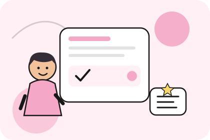

Present Perfect и Past Simple часто вызывают затруднения у тех, кто изучает английский. Оба времени могут описывать события, произошедшие в прошлом, поэтому при выборе формы легко ошибиться. Например, I have seen this film и I saw this film yesterday — оба предложения грамматически верны, но используются в разных ситуациях.
Чтобы понять разницу, важно обращать внимание не только на само событие, но и на то, как говорящий представляет его: как факт из прошлого или как опыт, результат которого важен сейчас.
Когда использовать Past Simple
Past Simple употребляется, когда речь идёт о завершённом действии в прошлом. Часто понятно, когда именно оно произошло: вчера, на прошлой неделе, два года назад или в определённый момент жизни.
Например, I visited London last summer — «Я посетил Лондон прошлым летом». В предложении указан конкретный период, который уже закончился, поэтому используется Past Simple. По тому же принципу строится фраза She bought a new phone yesterday — «Она купила новый телефон вчера».
В утвердительных предложениях правильные глаголы обычно получают окончание -ed, а неправильные используют вторую форму: work — worked, go — went, see — saw. В вопросах и отрицаниях с большинством глаголов применяется вспомогательный глагол did, после которого основной глагол возвращается к начальной форме: Did you see him? и I didn’t see him.
Когда нужен Present Perfect
Present Perfect связывает прошлое с настоящим. Это время подходит, когда важен полученный опыт, текущий результат или действие, которое началось раньше и продолжается до сих пор.
Сравним два предложения: I lost my keys yesterday и I have lost my keys. В первом случае мы сообщаем, когда потеряли ключи. Во втором подчёркиваем результат: ключей сейчас нет, и это имеет значение в настоящем.
Present Perfect также используют, рассказывая о жизненном опыте без указания конкретного завершённого момента. Например, I have visited London означает, что человек бывал в Лондоне. Если же он говорит I visited London last summer, то сообщает о поездке прошлым летом.
Для образования Present Perfect используется have или has и третья форма глагола: I have finished, She has finished, They have gone. В вопросе вспомогательный глагол ставится перед подлежащим: Have you ever tried sushi? — «Ты когда-нибудь пробовал суши?»
Как быстрее различать времена
Один из удобных способов — обращать внимание на обстоятельства времени. С Past Simple часто встречаются выражения yesterday, last week, two days ago и in 2022. С Present Perfect часто употребляются already («уже»), yet («ещё» или «уже» в вопросах), just («только что»), ever («когда-либо») и never («никогда»).
Однако отдельное слово не всегда определяет выбор времени автоматически. Важен смысл всего предложения. Например, I have lived here for five years обычно означает, что человек живёт здесь уже пять лет и продолжает жить. Если речь идёт о завершившемся периоде проживания, можно сказать I lived there for five years.
Сравнивайте предложения в контексте: She has just arrived сообщает, что она только что приехала, а She arrived at six o’clock указывает на конкретное время прибытия. Такие пары помогают увидеть, какую роль играет связь события с настоящим.
Главное — не выбирать время только по русскому переводу. Определите, сообщаете ли вы о завершённом событии в прошлом или связываете его с настоящим. Регулярно разбирая примеры и составляя собственные предложения, вы научитесь увереннее использовать оба времени. Для последовательного изучения грамматики и лексики можно обратиться к программам английского по уровням.